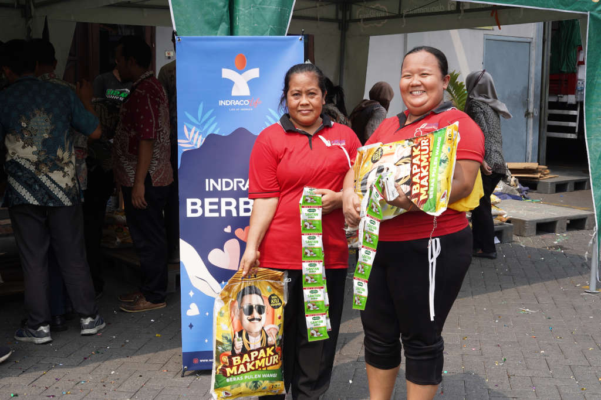

halaman berita & acara
INDRACO Berbagi: Budaya Berbagi dan Apresiasi Karyawan dari Indraco
16 Maret 2026
Program CSR INDRACO Berbagi dari PT Indraco Global Indonesia menjadi wujud kepedulian perusahaan kepada karyawan dan masyarakat. Melalui apresiasi karyawan, pembagian sembako, serta kegiatan sosial, Indraco menumbuhkan budaya berbagi, kebersamaan, dan kepedulian sosial.
